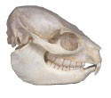

Acommon creationist claim is that Hyracotherium, which is informally called eohippus or "dawn horse," is nothing more than a type of animal called a hyrax. The hyraxes are a group of animals that are alive today and are not horses. Since Hyracotherium is generally considered to be the first "horse" the creationists conclude that this invalidates the commonly presented series of fossils showing horse evolution in specific and shows that evolutionists are incompetent in general.
Let us compare a Hyracotherium with a hyrax:
| Hyracotherium | Hyrax | |

|
 |
|
| Image Source: | Romer1 | Will's Skull Page |
| More Images: | Skeleton |
Two Large Skull Images
Another skull |
| Length of Imaged Skull: |
5.3 Inches | 2.9 Inches |
| Dental Formula:2 |
3 .
1 .
4 .
3
3 . 1 . 4 . 3 |
1 .
0 .
4 .
3
2 . 0 . 4 . 3 |
| Tail: | Long | Very Short |
As you can plainly see, Hyracotherium is not a hyrax. I would further point out that paleontologists do know what hyraxes look like since they have described many of them from the fossil record, often in the same books where they describe fossil horses. For reference, one can find images of modern horse skulls here and here while images of more fossil horses can be found here.
Creationists sometimes mention that Sir Richard Owen, the man who first described a Hyracotherium fossil, named it after a hyrax in 1841 as if this justified their conclusion. Stephen Jay Gould3 wrote about Owen's naming of Hyracotherium:
He did not recognize its relationship with horses (he considered this animal, as his chosen name implies, to be a possible relative of hyraxes, a small group of Afro-Asian mammals, the "coneys" of the Bible). In this original article, Owen likened his fossil to a hare in one passage and to something between a hog and a hyrax in another....
Thus I really don't think that Owen's naming of the creature was really that strong a thing to lean on in the first place. (And of course the creationists could have tried to find a picture of a hyrax skull themselves.)
Some Creationist Sources Making This Claim
| www.bible.ca | Textbook Fraud: Dawn Horse - Eohippus | "Hyracotherium and Hyrax are the same species, the former being an extinct subspecies."?!? Hyrax is not a species; neither is Hyracotherium. |
| The Institute of Creation Research | Impact #87 by Duane Gish | "...remarkably similar to the present-day Hyrax [sic should not be in italics since it is not a genus]." |
|
Creation Science Evangelism (Kent Hovind) | Creation Seminar | Falsely claims hyraxes are from South America. His other numerous claims like Marsh just made up the sequence are false as well. |
| Answers in Genesis | "Horse Non-Sense!" | |
| CRSQ | "...Unsatisfactory Nature Of The Horse Series Of Fossils..." | "...not a horse but an animal like the contemporary Hyrax [sic]..." |
| Mega-Successions | Notes | "...decidedly reminiscent of those of the rock hydrax [sic]..." The rock hyrax is the species of hyrax pictured above. |
| The Revolution Against Evolution | Creation Bits No. 24 | "Its skeleton is indistinguishable from that of the modern Hyrax ..." |
| The Darwin Papers | "Fossils: History Written in Stone" | "...the modern hyrax is nearly identical, except for size,..." |
| Noah's Flood | Sherlock's | "...speculative fabrication of a rock badger [sic] or African Hyrax..." |
| Measure of Gold | "10 Reasons Evolution is Wrong" | "Three-toed horse is still exists in S. America as the Hyrax" |
| Scientific Facts and Evolution | "Evolutionary Showcase" | "...is identical to the rabbit-like hyrax (daman)..." Makes bizarre claim that it climbed trees. |
| Science, Faith, and Philosophy in the Study of Origins | "Horse series (transitional fossil series?)" | "...remarkably similar to the present-day Hyrax." |
| Creation, Creationism, & Empirical Theistic Arguments | "The Flawed 'Horse Series'" | "...remarkably like the present-day Hyrax (or daman)..." |
| Creation Instruction Association (C.I.A.) | "Horse Evolution" | "This creature has a skeleton very similar to that of Eohippus yet it has not 'evolved' to what the present day horses are. If evolution were true Eohippus, nor anything like it, should [not] be found today." The second sentence shows author falsely thinks evolution is a linear progression. |
| Christian Apologetics | "The Scientific Case Against Evolution" | "Eohippus is probably an extinct type of hyrax." The article is supposed to be part of a "doctoral dissertation" by Phil Fernandes! |
| Christian Essays | "Scientific Frauds" | "...Eohippus has now been accepted as more of a hyrax, or rock badger, (or coney)..." |
| Why Do You Believe In Evolution? | "Some Common Arguments For Evolution" | "It is actually more similar to our modern day hyrax..." |
|
Science and the Bible by Henry Morris | Page 55 | "...probable that Eohippus [sic] is really an extinct variety of hyrax..." |
There is a variant version of this claim. Lawrence O. Richards4 wrote:
Today no evolutionist thinks that the "short-necked creatures not much bigger than a domestic cat" is related to the modern horse at all. The fossil called Eohippus, or Dawn Horse, is now considered to be a close relative of the rock rabbit!
The hyrax, which creationists usually claim that Hyracotherium is, has now been transformed into a rock rabbit (click here to see a skull)! "rEvolutionary Thinking Where Do We Come From Really? A Critical Analysis of the Scientific Evidence for Evolution" (the "rEvolutionary" is not a typo) copies large portions of what Richards wrote including the section in question. A different page on the same web site claims it is "indistinguishable" from a hyrax. So we have a web site that claims Hyracotherium is a rabbit on one page and a hyrax on another! A dentist by the name of Wm. T. Greenshaw repeats the claim by plagiarizing Richards via verbatim copying without giving credit whatsoever. The Richards book received the Gold Medallion Book Award "in recognition of excellence in evangelical Christian literature." John N. Moore of the Creation Research Society is listed as a consulting editor. And yet the book is just incredibly inaccurate. Richards falsely claims that some evolutionists think that a reptile laid an egg that hatched into a fully developed bird and illustrates the claim with a picture of a bird hatching from an egg laid by a dinosaur though the creature illustrated is a mammal-like reptile. Richards falsely claims that hemoglobin is "exactly the same" in all species with it. In reality the hemoglobin of different species is different unless extremely closely related and these differences can be used to trace the course of evolution though today DNA data is used more often. Richards falsely claims that carbon-14 decays into carbon-12 when in reality it decays into nitrogen-14 via beta decay. This book has many other errors like this.
{kind=link}
References
| 1. | Alfred Sherwood Romer, Vertebrate Paleontology, Third Edition, (Chicago, The University of Chicago Press, 1966), p. 265. |
| 2. | Sybil P. Parker, editor of English Edition, Wolf Keienburg, editor in chief of German Edition, Grzimek's Encyclopedia of Mammals, translation of Grzimeks Enzyklopädie Säugetiere, (New York, McGraw-Hill, 1990), volume 4, pp. 540, 553. |
| 3. | Stephen Jay Gould, "The Case of the Creeping Fox Terrier Clone." In: Bully for Brontosaurus: Reflections in Natural History, (New York, W.W. Norton & Co., 1991), pp. 155-167. (Quote on p. 160.) |
| 4. | Lawrence O. Richards, It Couldn't Just Happen: Fascinating Facts About God's World, (Dallas, Word Publishing, 1987), pp. 94-95. |